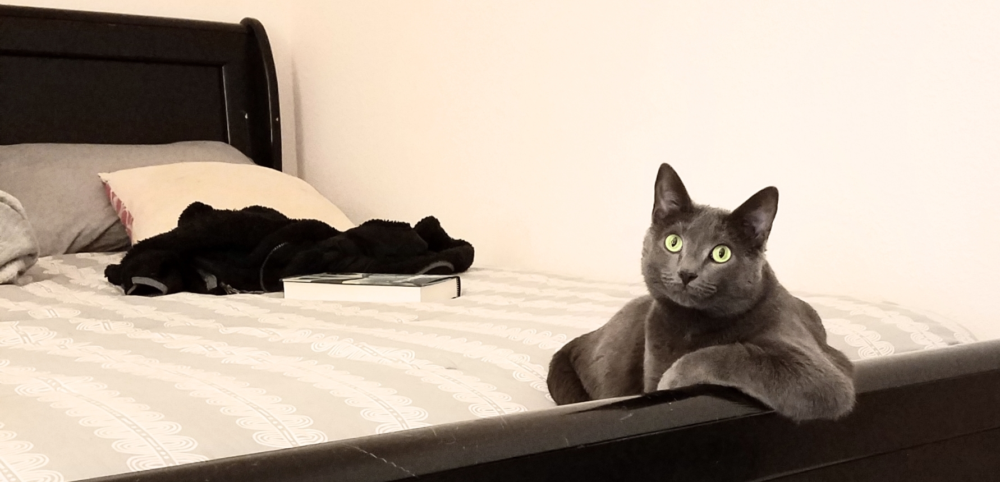

Olaila the Cat
"One of the best."

Olaila lounges on the bed, November 2018
Fun facts about Olaila:
- One of Olaila's favorite foods is cheese.
- Olaila has many nicknames, including:
Little Cat, LC, Cat-loaf, Little Kit, Gauntlet
- Olaila lived the first year of her life in a dumpster in Midland, Texas. She is a trash kitten!
- Olaila has been on three road trips:
Midland, TX → Dickinson, ND
Dickinson, ND → Madison, WI
Madison, WI → Sheridan, WY
- Her favorite activities include napping, eating, chasing toys, looking out the window and talking to birds.
- The little cat is very afraid of most other animals, especially wild Sagertooth Tigers!
More pictures of Olaila (and a bonus Milo!) can be found at this link.